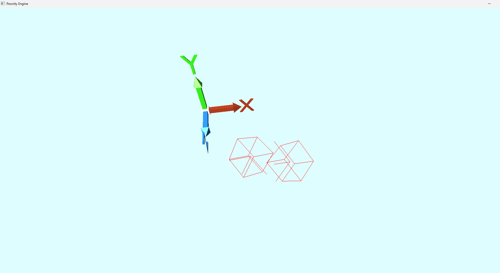
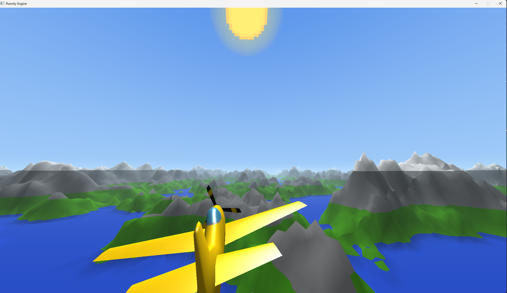
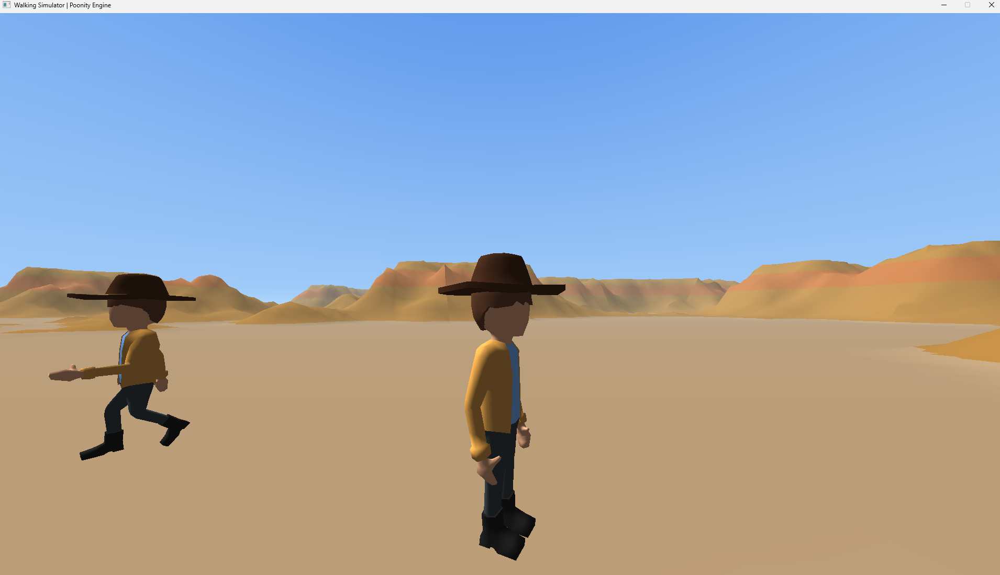

This is not a proper game engine yet; it is currently more a framework for 3D graphics because that is what I have spent most time
doing. I am now working on a physics engine in order to drive interaction in the scene. This will be an optional module but will
be built in to the optional future scene module. After this I might start on integrating a few things I've worked on at the side
as well as the other future additions, hopefully to a state where I can make a prototype game. After that I may start polishing
the engine user experience with an editor and other tools.
I wasn't working on the engine because I was having more fun experimenting in the engine. These are what I made:
- Added OBB collision detection using separating axis theorem
- Made a scene inspired by the "Final Demo" of Sebastian Lague's software rasterizer of a plane flying through procedural terrain
- 3rd person character controller that I designed in Unity which I then added skeletal animation to (nicked the model from Sebatstain Lague)
- State machine wandering NPC also with skeletal animation



Below is a video of the game engine as of 17/03/25. It demonstrates the (at the time) recent addition of proper transformations (translation, scaling and rotation) and the material system which includes texturing and specular mapping. The specular mapping is not apparent in
the video because I had forgot to also transform the fragment position in the vertex shader making the specular highlights static on the objects. That has been fixed.